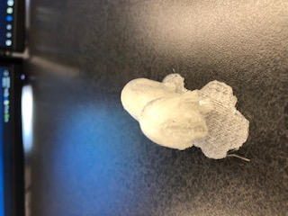
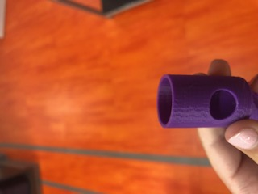

Our first challenge was to create a mix of an animal and ourselves. I scanned my face and downloaded a pattern for a koala and put my head on the koala's body. Next I made an organizer for like paperclips and such. I printed it before break and when I came back to retrieve it, I couldn't find it. I also made a cup woth holes in it for fun.
 